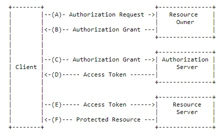
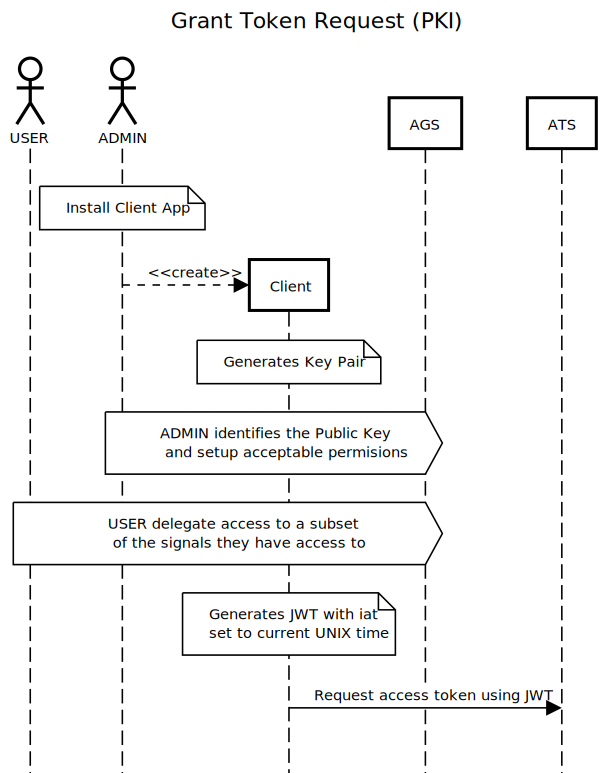
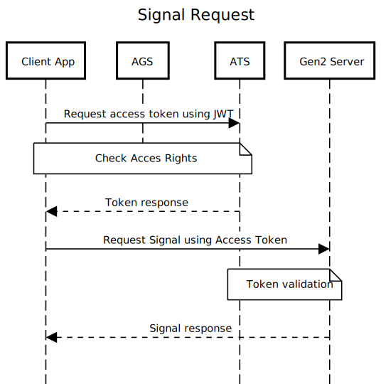
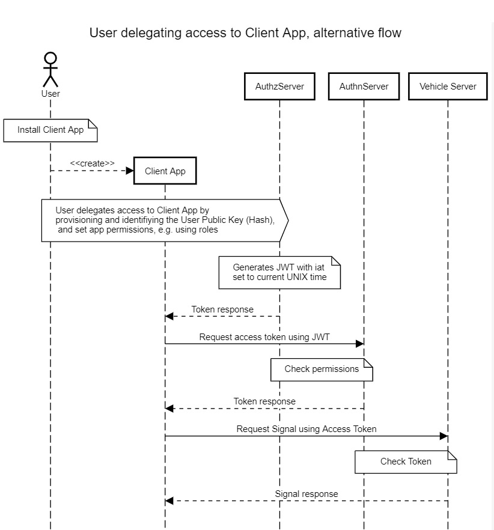

This document, the Gen2 core specification, describes the Gen2 messaging layer.
The companion specifications for the Gen2 transport protocols detail the mapping of the messaging layer to selected transports.
The ontologies based on the Gen2 core specification are defined in documents for each specific domain
(e.g. navigation, media, vehicle data).
Introduction
This document describes the messaging API for Gen2 protocol.
This includes the messaging layer and set of rules for structuring data.
The separation between payload encoding (transport) and messaging API (core) improves adaptability.
Extending and describing multiple transport protocols becomes possible.
The messages are exchanged between a server implementation holding the representation of data
and a client using the data.
The Gen2 messaging layer uses a RESTful design for all methods exchanged via the interface ().
The Gen2 data structuring rules (VSS Rule set) are the same through all transport protocols.
The basis for structuring data hold by a server is a tree.
Terminology
The acronym 'Gen2' is used to refer to this document, the second generation specification. The acronym 'VSS' is used to refer to the 'Vehicle Signal Specification' which is defined by the GENIVI Alliance. The term 'WebSocket' when used in this document, is as defined in the W3C WebSocket API and the WebSocket Protocol.
Data model
The service is intended for use with a tree-like logical taxonomy to
represent the vehicle data. An illustrative example of such a tree
structure is shown in Figure 1. While it
is meant to support conforming taxonomies it was created principally
with the Vehicle Signal Specification (VSS) in mind. For more
details, see the VSS documentation.
Diagram showing an example VSS 2.0 tree.
VSS does not have a "domain root node" for the vehicle signal domain, like the Car node in Fig 1. To be introduced in VSS, or removed from here?
Addressing
Addressing of elements is done using URIs as defined in [[RFC3986]].
The scheme describes the protocol to use to reach the addressed element.
The authority describes where to reach the server holding and managing the data representation.
Scheme and authority are defined within the protocol adaptation.
The path consists of the slash delimited node names of the nodes traversed from the tree root to the tree leaf representing the data point. E. g. the path expression from traversing the nodes Vehicle, Car, Engine, RPM would be "Vehicle/Car/Engine/RPM".
The query contains further information related to the request, see .
VSS 2.0 should use slash as delimiter. If not, this difference should be pointed out here.
Service discovery
The purpose of the data model is to provide a client with a description of the data that enables the client to make a request for desired vehicle data, and interpret the response. In order to obtain that description, the client MAY request that the server returns the VSS tree content, i. e. the metadata describing the accessible vehicle data. The client is able to request metadata from any point in the signal tree, such that only the metadata for the nodes within the given branch of the tree is returned. For example, only metadata for the chassis branch of the VSS tree is returned when the chassis path is specified. If the path is set to the VSS root, the response contains the metadata for the entire tree. If the server is able to satisfy the request it SHALL return a Response message. If an error occurs the server SHALL return an ErrorResponse message. A service discovery request has the format of a read, where the path is appended with a query component, see for the details. The key data components of these messagess are defined below:
Request message parameters:
Path: The address to one or more nodes in the VSS tree, followed by the query component specifying the service discovery.
Response message parameters:
Metadata: The content of the VSS tree where the root is specified by the path.
Timestamp: A timestamp associated with the request.
ErrorResponse message parameters:
Error: Information describing the error reason.
Timestamp: A timestamp associated with the failed request.
Dynamic registry
To enable e. g. after-market services it SHALL be possible to dynamically add new branches to the VSS tree, and if requested also to delete them at a later point. Requests of this type are not expected to be frequent for the type of data that is represented in the "vehicle signal domain", which is the current scope of VSS. These requests are therefore partitioned in a separate API, which is described in "Appendix: Dynamic registry API".
Filtering
Filtering is a mechanism to refine a client request, in order to more precisely control the data in a response. Filtering can be applied in read requests and in subscribe requests.For read requests the filter expression MUST be appended to the request path in the form of a query component following the description in [[RFC3986]]. For subscribe requests the filter expression MUST be carried in the request payload. The filter expression follows the same general rules in both request cases. The query component must have the following structure
reserved-word comparison-operator expression
where
- reserved-word must have the dollar-sign as the first character ($). The availabe reserved words are described in the chapters below.
- comparison-operator is one of either the equal sign (EQ), the greater than sign (GT), or the less than sign (LT).
- expression is a character string with its interpretation given by the preceeding reserved-word and comparison operator.
Filter expressions can consist of multiple query expressions, as described in .
As filtering is implemented on the server side, in vehicles, the filtering complexity is intentionally kept to a low level in order to not load the processing resources too much.
Read filtering
The available read filtering options are presented in the following chapters, and are only applicable to read requests. As described in [[RFC3986]], a question mark must be inserted as a delimiter between the path and the query components.
Service discovery filter
The service discovery query has the structure
$spec EQ depth
where
- $spec is the reserved word for service discovery filtering.
- the equal sign (EQ) is the only allowed comparison operator for service discovery filtering.
- depth sets the maximum branch depth that is returned in the response, counted from the root node given by the path component in the request.
Depth MUST be a positive integer. If set to zero, it is replaced by the max depth of the subtree.
Search filter
If the path in a read request does not terminate in a leaf node, then the response will contain values from all leaf nodes in the subtree given by the path. The search filter makes it possible to tailor a subset of this response. The search query has the structure
$path EQ search-expression
where
- $path is the reserved word for search filtering.
- the equal sign (EQ) is the only allowed comparison operator for search filtering.
- search-expression is a path expression that may contain the wildcard character (*) for representation of an unknown node name.
The search-expression is relative to the root node given by the path component in the request. An example could be "*/*/isOpen", which, preceeded with a slash, and concatenated with the request root-path "Vehicle/Cabin/Door" would generate the absolute search expression "Vehicle/Cabin/Door/*/*/isOpen", in which case the response would contain all values from the isOpen nodes in that subtree, but not from the other possible leaf nodes in it.
The search filter can be used also in subscribe requests, see chapter Filter combinations.
Data value filter
If a request, typically when it is addressing a subtree, is only interested in response data with a specific value, then a data value filter can be used.
The data value query has the structure
$data comparison-operator value
where
- $data is the reserved word for data value filtering.
- comparison-operator is one of either the equal sign (EQ), the greater than sign (GT), or the less than sign (LT).
- value is a number following Javascript syntax rules, or a boolean value.
If the data type of the value-expression is different from the data type of the node matching the path, then an error response is returned.
Subscribe filtering
The available subscribe filtering options are presented in the following chapters, and is only applicable to subscribe requests. The filter expression is carried in the request payload in the form of a key-value pair "filter": "filter expression", where "filter" is the key name, and "filter expression" is replaced by the actual expression.
Interval filter
An interval filter is used in a subscribe request when the client wants subscription notifications to be issued by the server at a regular time interval.
The interval query has the structure
$interval EQ value
where
- $interval is the reserved word for interval filtering.
- the equal sign (EQ) is the only allowed comparison operator for interval filtering.
- value is an integer value in milliseconds representing the interval between issued notifications.
Range filter
A range filter is used when the client wants subscription notifications to be issued by the server when a value enters/exits the defined range.
The range query has the structure
$range comparison-operator value
where
- $range is the reserved word for range filtering.
- comparison-operator is one of either the greater than sign (GT), or the less than sign (LT).
- value is a number following Javascript syntax rules.
Change filter
A change filter is used when the client wants subscription notifications to be issued by the server when a value has changed more than a defined value since last notification.
The change query has the structure
$change comparison-operator value
where
- $change is the reserved word for change filtering.
- comparison-operator is one of either the greater than sign (GT), or the not equal sign (NEQ).
- value is a number following Javascript syntax rules.
When using the not equal comparison operator it MUST have the value zero, all other values lead to an error response. The usage is interpreted as "for any change", and also supports boolean changes.
Filter combinations
Queries of the types descibed below can be aggregated to form more complex queries. The format for this is then
query1 AND query2 AND .. queryN
where
- queryN is any of the query types, following the allowed combinations shown in Table 1.
- N is maximum four.
- AND is the logical AND operator.
Index
Filter name
Allowed combinations
1.
Service discovery
None
2.
Search
3+4+5+6
3.
Data value
2
4.
Interval
2
5.
Range
2+5+6
6.
Change
2+5
An example of a read request URI containing an aggregated query is
Vehicle/Cabin/Door?$pathEQ*/*/isOpenAND$dataEQfalse
which would return data for all locked doors.
In filter combinations where a search expression in the URI is combined with a subscribe filter expression in the payload, the logical AND operator combines them.
Shall it be possible to use search filtering in subscribe requests?
Other data models may want further query support.Should there be some text about that?
Access control model
We should include some motivation text and maybe reference to Extended Vehicle and other standards where vehicle data is exposed to third parties so justify the need for a solid access control model.
Gen2 OAuth 2.0 architecture
We might need a different name, as it is inspired on OAuth2 but uses a different transport mechanisms. We are not using HTTP redirects or headers, everything is a JWT.
The Gen2 access control model builds on the concepts of OAuth2.0 [[RFC6749]].
OAuth2.0 introduces an authorization layer to separate the role of the client from that of the resource owner. The client requests access to resources controlled by the resource owner and hosted by the resource server, and is issued a set of credentials.
To access protected resources, the client obtains an access token -- a string denoting a specific scope, lifetime, and other access attributes. Access tokens are issued to clients by an authorization server with the approval of the resource owner, provided in the form of a Grant. OAuth 2.0 support different Grant Types.
The client uses the access token to access the protected resources hosted by the resource server.
OAuth2.0 defines four actors: Resource owner
An entity capable of granting access to a protected resource. Resource server
The server hosting the protected resources, capable of accepting and responding to protected resource requests using access tokens. Client
An application making protected resource requests on behalf of the resource owner and with its authorization. Authorization server
The server issuing access tokens to the client after successfully authenticating the resource owner and obtaining authorization.
The abstract OAuth 2.0 flow illustrated in the figure below describes the interaction between the four actors.

OAuth2.0 abstract protocol flow.
Two different flows are supported in Gen2, which both follow the OAuth2.0 abstract flow, as will be described in the chapters below are based on OAuth 2.0 Bearer token authentication [[RFC6750]]. The main difference between them is how the Grant, in our case the Grant Token, is obtained.
The actor names are however changed as shown in the table below.
OAuth2.0 name
Gen2 name
Client
Client
Resource Owner
Access Grant server
Authorization server
Access Token server
Resource server
Gen2 access control server
A detailed description of each actor is found in following chapters.
Client
I think USER needs a separate section, we need to show the distinction between client and USER because in OAuth, the USER delegates in the client, the user is not part of the client, although client requests have USER attributes attached somehow ...
Describe the combi-role model. Isaac: I tried to include the concept when defining the subactors without actually naming it.
In our architecture there are three subactors that together represent the Client actor: The client DEVICE, the client APP and the USER behind it. All of them need to cooperate for a successful request. Depending on the kind of DEVICE, the APP permissions and the USER roles, different access control decision will be made.
We need to align this with the roles ...
The DEVICE is in charge of running the APPs that make requests to the VSS server. In general terms it could be the in-vehicle system, an user device or an Internet server. Presumably, APPs running in the vehicle will be intrinsically trusted, but for APPs running in the USER's device or in a Third-party server there might be a need to check the DEVICE capabilities.
OAuth makes a distinction between public client and confidential client, being the later able to securely authenticate with the authorization server. For that purpose, it would be interesting check whether the DEVICE has some kind of Trusted Execution support that enables cryptographically assured DEVICE attestation.
Also, location of the DEVICE could be relevant for access control decisions. If the server is in a different country data regulation might impose restrictions. Also, if the DEVICE is a smart-phone it might be relevant whether the request was performed inside the car or from home.
The APP runs requests on behalf of the USER. During development and APP building some restriction could be imposed on the kind of information the APP can fetch from the VSS server. The developer might need provide the source code before the APP is assigned certain permissions. Permissions are assigned at building time and stay the same during the whole APP life cycle, so no new permissions can be assign after that. However the USER might have the option to deactivate some of the permissions depending on the platform running the APP.
The USER refers to the entity delegating access rights to the APP. Different users might be involved in a single use case. The OEM might delegate access to some piece of information under its control, e.g. some data about the engine, but for driving data the driver's permission might be needed. Also, is the APP requires to access some vehicle identity the owners consent might be required.
I intentionally used delegation, permission and consent as synonyms in this last paragraph, we need to agree on the most precise and clear term for the reader.
Access Grant server
Who runs the Access Grant server??Ulf:Typically the OEM. Referring to OAuth2.0 abstract I would say the Resource Owner, but in the automotive ecosystem that is not pointing to one entity, but rather two: Vehicle Owner and OEM.
The Access Grant Server (AGS) is in charge of producing Grants, in the form of JWT Tokens to Clients, called Grant Tokens. Users need to register to the AGS in order to approve clients. Clients also need to be registered to the AGS before requesting a GT from the AGS on behalf on an user. In every request, clients need to securely authenticate themselves and user approval needs to be checked, taking into account different information involving for example purpose.
Purpose is not presented to the AGS but to the ATS. The clause above talk about both registration and authentication. This needs to be described in more detail.
Depending on the capabilities of the client, the specification support two types of Grant Tokens. On the one hand, self issued Grant Tokens are supported for those clients able to run public key cryptographic primitives, i.e. key pair generation and signatures, and is the recommended choice for clients with access to some kind of trusted execution environment where private keys are protected from the regular execution environment. On the other hand, the specification supports Grant Tokens issued by the Access Grant Server. This choice requires no extra capabilities in the client, but forces the client to contact the AGS in every request for a new Grant token.
Specify input/output in Client/AGS interaction:
Client input: VIN, Role, Public key (optional), Credentials)
Server output: PKI based -
Server output: Token based - AG token containing fields for: Role, Expiry time, Issuer,
PKI based Grant Token request
As a first step before any interaction with the Gen2 server, the client needs to be registered in the system. This process involves three actors: The client device (DEVICE), the client application (APP) and the user that installs the application (ADMIN). All of them need to cooperate for a successful client registration. The registration and approval process for the client would be as follows:
The ADMIN installs the APP in the device. ADMIN could be the OEM in the case of an APP that is installed in the car, it be a third party adding services to the car, or deploying an application in the cloud, or it could be the owner/driver itself installing an application in its personal device.
The APP generates a key pair. In this step the APP needs to generate a key pair. The private key would be used to authenticate request coming from this APP/Client. In order to verify the requests, the public key should be uploaded to the system. If a device supports key attestation, then the key could be accompanied by a key attestation certificate that would help the system identify the DEVICE.
The ADMIN register the APP by confirming to the AGS its public key. In this step no permissions are assigned to the APP, the ADMIN registering the APP should only check that the public key is properly registered in the AGS. Also, the APP needs to provide some kind of Proof-of-Possession, e.g. [[RFC7800]]
After successful registration the ADMIN can define some acceptable permissions with associated purposes to the APP. The permission definition process is completely decoupled from the access control decisions, as the user installing the application could be different than the user on behalf of which the APP is requesting the signals.
After APP registration, USERs can delegate access to them in the AGS. The process of delegating access involves confirming whether all permissions assigned by the ADMIN are accept or just a subset of them. Access can also be revoked to all or just a subset of permissions. USERs can only delegate access to those signals they have been granted access to.
Who grants access to users? Who issues and manages roles? Is the AGS in charge of that? Ulf: I think we should keep the ADMIN out of scope here. The APP installment as such do not have to lead to any interaction with this access control system. The permissions/purpose setup should also be kept out-of-scope in this context. In the Purpose chapter I describe a document, the Purpose list that the ATS is provisioned by the "Resource owner" (typically OEM), which links purposes to both permissions and roles. In my view a Client is an abstract representation of the three subactors USER, APP, DEVICE, and a Client is "created" at the point when these three subactors authenticate/register with the AGS. The "credentials" that the AGS returns to the APP is the "proof" of the Client's existence. The Client shall in its request to the AGS include which role (User/App/Device) it desires. It is up to the AGS, through authentication and other means to decide whether the role request shall be granted. The exact details of how that decision is taken is out-of-scope.
Registered APPs can request access to any signal they were delegated access to. In order to do so, the APP needs to request an Access Token to the Access Token Server, indicating the particular target signal path. In this request, the APPs needs to include also an identifier of is public key and a Proof-of-Possesion of the private key. A JWT signed by the private key of the APP, including the current unix time will serve that purpose.
The Access Token Server will validate the request as following:
It needs to check that the Key ID corresponds to a registered APP and recover the corresponding Public Key. If there is not APP registered with this key ID the request will be rejected.
It will check the JWT digital signature using the public key of the APP. If the digital signature verification fail the request will be rejected.
It will check the timestamp included in the JWT, in case the timestamp is too old, the request will be denied.
Finally, it will check that the signal path requested is included both in the permissions assigned at registration time by the ADMIN and the access rights of the USER behind the request.
That final steps is the most complex, as it has to deal with the access control policy, i.e. RBAC or similar proposals. The other steps are very straightforward. We might need a separate section just for that and omit this in the flows to avoid unnecessary complexity when following them.Ulf:I think we should base it on RBAC. I agree that it should probably be in its own chapter, referred to here

Sequence diagram showing a PKI based flow
Token based request
Access Token server
The Client shall after a successful interaction with the AG server request an Access token from the Access Token server.
The Client input in that request must be:
An Access Grant token.
A Purpose.
The Access Grant token is, depending on which of the two flows used by the Client, either generated and signed by the AG server, or generated and self-signed by the Client.
The Purpose must be supported by the Resource Owner, and thus be on the Purpose list, see the chapter Purpose.
The main responsibilities of the Access Token server are:
To validate the Access Grant token.
To map the Purpose to access of relevant signals.
To create an Access Token.
The validation of the AG token consists of at least the following:
Signature validation.
Expiry time check.
The signature validation is handled differently depending on whether the token contains a public key or not.
If it does, then it is signed by the private key associated with this public key, and thus the validation is performed using that key.
If this validation is successful, then the authenticity of the public key must also be validated.
In the case the AG token has been signed by the AG server, the validation requires that the Access Grant server and the Access Token server previously have set up a trust relationship by e. g. sharing a common secret or the like.
The details of such a relationship is out-of-scope.
The expiry time MUST be later than the current system time of the AT server run-time. To allow for some time synchronization inaccuracy an error of tens of seconds may be allowed.
The mapping of Purpose to the set of signals relevant for the purpose is done by using the document described in the chapter "Purpose".
If the Client role as declared in the AG token is not found in the set of allowed roles in the Purpose mapping document then the client request for an Access token MUST be denied.
The Access token MUST contain the following fields:
The set of signals associated to the purpose.
Expiry time.
Issuer identity.
Gen2 secure signal request
If the Gen2 server implements access control, then it MUST support validation of Access tokens.
This includes validation of at least the following:
Token signature.
Token expiry time.
Token scope.
Token access mode.
If any of the mentioned validations above fail, the server MUST reject the access request.
Token signature validation may be delegated to the AT server, if a secure communication link can be established.
If not delegated, then a preprovisioned common secret may be shared with the AT server, or other PKI based solutions may be used.
The Gen2 server SHALL have access to a secure system time, that cannot be modified by actors without system acknowledged credentials.
Time validation may allow for a time synchronization inaccuracy in the range of tens of seconds.
A successful scope validation requires that all the nodes addressed by the path in the request MUST be matched by the paths in the scope field of the Access token.
The access mode validation MUST have the outcome shown in the table below, which compares the type of request with the access control mode field in the Access token.
Validation
Read-only
Read-write
get set subscribe
Ok
Ok
Nok
Ok
Ok
Ok
Access Token need to be refreshed periodically. In order to obtain an Access Token, the client needs to contact the Access Grant Server and provide a Grant Token in the form of a JWT with all the information required to validate access rights for this request.
After successful validation, the APPs receives an Access Token that can be used later on to when querying the Gen2 Server.
This Access Token can be opaque or in the form of an JWT signed by the Access Token Server that includes access rights granted. Should we recommend one of the two options or leave it open? Ulf:I definitively think it should be the latter.
The last phase of the flow is the actual fetching of the signals values. In order to get the signals from the Gen2 server the APP includes the Access Token in the request headers. The Gen2 server decides whether the request requires access control and if so involves the Gen2 access control server to validate the request. If there is not Access Token and security is enable the request is rejected. If the token issued by the Access Token Server was opaque, the Gen2 access control server would need to contact it in each request, in order to obtain the access rights granted. If the token was a JWT, the Gen2 access control server will have all the information required to grant or deny the request. In any case, if the access rights granted match the requested path the request will be send to the Gen2 server that will send a response to the APP, otherwise the request will be rejected.
The Client request to the ATS for an Access token should contain the Purpose. The ATS then uses the Purpose list document to assign the access scope, and verifies that the Role of this Client shall be allowed this access scope.

Sequence diagram showing a secure signal request
Access control flows
Token based flow

Sequence diagram showing a token based flow
Flow negotiation
(A solution could be as described.
A client can in its request to the AG server either provide a public key, or not.
If it does, then that signals that the client requests a PKI based flow.
If it is missing then that signals that the client requests a token based flow.
The AG server may return an error code if a PKI based flow is requested, but it does not have sufficient trust in the client.
The AG server may return an error code if a token based flow is requested, but the server requires a PKI based flow.)
Role based access control model
The Client actor described in the Client chapter is characterized by three subactors:
The device.
The application.
The user of the application.
Each of these subactors is in turn characterized by a role, building on the concept of a Role Based Access Control (RBAC) model. Gen2 specifies a rudimentary list of roles for each subactor, it is expected that these lists are augmented by the Resource owners, hopefully in a cooperative effort.
Using an RBAC model provides the following main purposes in the Gen2 access control model:
Provide input to the AG server for decision on which authentication methods to apply.
Provide input to the AG server for decision on restriction of the permissions granted.
The AG server must in the authentication process of the client possibly separately authenticate each of the three subactors.
For the AG server to decide on which authentication method to use per subactor can be quite complex, but will be at least somewhat eased if the Client request a role for each subactor.
As an example, a request for a Vehicle device role may be verified by the device MAC address, while a request for a Nomadic device role may be verified by a message round-trip time measurement.
From a security point of view a Client should not have access to more vehicle signals than are necessary, following the principle of least priviledge. This is achieved by the Purpose document described in the Purpose chapter, that assigns only the for the Purpose relevant signals to the Client.
Device roles
Gen2 specifies the following minimum set of roles for devices:
Vehicle
Nomadic
Cloud
Undefined
A Vehicle device is used for applications that are deployed in-vehicle, in e. g. the center stack ECU.
A Nomadic device is used for applications that are deployed in a User's mobile phone, laptop, etc.
A Cloud device is used for applications that are deployed in any other off-vehicle device.
Application roles
Gen2 specifies the following minimum set of roles for applications:
OEM
Third party
Undefined
An OEM application is used for applications that are pre-installed in the vehicle by the OEM, or later OEM-provisioned to the vehicle.
A Third party application is used for applications that are "certified" for vehicle deployment, but developed by a third party.
User roles
Gen2 specifies the following minimum set of roles for users:
OEM
Dealer
Independent
Owner
Driver
Passenger
Undefined
An OEM user is anyone representing the vehicle brand.
A Dealer user is anyone representing a normally OEM affiliated organisation that provice sale and workshop services for the vehicle.
An Independent user is anyone representing a normally OEM independent organisation that provide after-market services for the vehicle.
An Owner user is anyone representing the organisation owning the vehicle.
A Driver user is anyone driving the vehicle.
A Passenger user is anyone travelling in the vehicle, but not being the Driver.
Access control selection model
This chapter describes a complementary functionality to the access control model, the ability to apply it selectively to parts of the tree.
It can be used in cases where not all nodes of the tree are believed to require access control,
or read-only is sufficient instead of read-write access control for certain nodes.
This functionality requires that the Access token contains access permission data specifying whether the access to a node is read-only, or read-write.
It also requires that the metadata for the node in the VSS tree contains data specifying whether the access control verification should be carried out only for write request,
or for both read and write requests.
The former requirement is realized by having a field in the Access token named "acm" specifying the access control mode.
This field can either contain the string "read-only", or "read-write".
The client request to the Access token server MUST contain either of these string values for every node in the request.
The latter requirement is realized by adding to nodes in the VSS tree the key-value pair "validate":'access-control-mode',
where 'access-control-mode' is either the string "write-only", or "read-write". Access control selection tagging.
The figure above shows an example where both read and write requests to the three leftmost leaf nodes will be access controlled,
while the two rightmost leaf nodes only will be access controlled for write requests.
This metadata is not likely to be applied to the standardised VSS tree, as different users of this standard may have different views on which nodes to apply it to.
Instead it is anticipated that it is applied at a "deployment" stage, possibly using the VSS layering concept.
To make possible a reduction of the number of nodes this metadata have to be added to, an inheritance model is used.
If access-control-mode data is added to a node, then all nodes in the subtree for which this node is the root inherits the setting,
unless there is access-control-mode data added to any node in this subtree.
In such cases this new access-control-mode setting is inherited by the subtree of this node.
This allows for example an entire VSS tree to be assigned an access-control-mode by merely applying it in the root of the tree.
The figure below shows an overview of the access control selection model,
and a table showing the required access control tagging of a node for the Gen2 server to grant the requested access.
Access control selection model.
If the VSS tree used by a Gen2 server contains access control selection tags, then the server MUST support their usage as described in this chapter.
If it is not used, then a server MAY implement access control for the entire tree.
If access control is implemented, the server MUST support the error codes shown in the table below.
Error Number (Code)
Error Reason
Error Message
404 (Not Found)
missing_token
The addressed node is access controlled, a token must be included in the request.
406 (Not Acceptable)
invalid_token
A new, valid access token must be obtained.
406 (Not Acceptable)
insufficient_priviledges
The priviledges represented by the access token are not sufficient.
Privacy and data protection
Purpose
A Client MUST provide a Purpose as input to a request for an Access token. A list of supported purposes needs to exist for a client to select from, this list is typically created and owned by the Resource owner. Each entry in the list contains a short description of the purpose, which is what the Client shall provide as input to its request for an Access token. There is also a long description, which may be used in the dialogue for consent, if needed. Then there is a list of the roles, per sub-actor, that can be granted this access, and last there is a list of the signals that the client is given access to for this purpose, with the allowed access mode. The list SHALL use a JSON format as shown in the example below.
{"purposes": [{"short": "Pay as you drive", "long": "Insurance cost based on drive data.", "roles":{"user": ["OEM", "Owner"], "app": ["OEM", "Third party"], "device": ["Vehicle", "Cloud"], "signal_access": [{"path": "Vehicle.Drivetrain.Transmission.Speed", "access_mode": "read-only"}, {"path": "Vehicle.Cabin.Infotainment.Navigation.CurrentLocation.Latitude", "access_mode":"read-only"}, {"path": "Vehicle.Cabin.Infotainment.Navigation.CurrentLocation.Longitude", "access_mode": "read-only"}] }] }
The Purpose list SHALL be securely provisioned to the AT server. The protocol for this is out-of-scope.
The AT server MUST reject all requests for Access tokens if it is not in possession of a Purpose list.
Interface
This chapter describes the different methods and its arguments that govern the communication between a client and the server.
Methods
The transport protocols used to implement these methods MUST implement the Read and Update methods, and MAY implement the Subscribe, Unsubscribe, and Subscription methods.
Read
Purpose: Get one or more values addressed by the given path.
The client MAY have to obtain an authorization token before being able to access the values.
If the server is able to satisfy the request it MUST return a success response.
If the server is unable to fulfil the request, then the server MUST return an error response.
Arguments:
path The path as defined in VSS to one or more nodes in the VSS tree.
filter Additional information defining the requested data.
Purpose: Provide altered value to the vehicle signal(s) addressed by the path
The client MAY have to obtain an authorization token before being able to update the vehicle signal(s).
If the server is able to satisfy the request it MUST return a success response.
If the server is unable to fulfil the request, then the server MUST return an error response.
Arguments:
path The path as defined in VSS to one or more nodes in the VSS tree.
value The value by which the vehicls signals addressed by the path will be updated to.
timestamp The time for updating of the vehicle signals.
Subscribe
Purpose: Get asynchronous messages containing the value(s) addressed by the path. The triggering rules for issuing the notification messages are set by the filter data.
The client MAY have to obtain an authorization token before being able to subscribe to the vehicle signal(s).
The server MUST issue a notification if a trigger rule is fulfilled.
If the server is able to satisfy the request it MUST return a success response.
If the server is unable to fulfil the request, then the server MUST return an error response.
If an error occurs during the subscription period, the server SHOULD return an error notification.
Arguments:
path The path as defined in VSS to one or more nodes in the VSS tree.
filter The rule set describing triggering criterias for issuance of asynchronous notification messages.
subscriptionId A handle identifying notification messages associated with the subscription.
timestamp The start time for the subscription period.
Unsubscribe
Purpose: Termination of the subscription period started by a previous subscribe request.
If the server is able to satisfy the request it MUST return a success response, and it MUST stop issuing notifications associated to the subscription handle.
If the server is unable to fulfil the request, then the server MUST return an error response.
timestamp The stop time for the subscription period.
Subscription
Purpose: Asynchronous client notification according to the subscribe request trigger rules.
The server MUST issue a notification message when a triggering rule associated with the subscription is met.
If the server cannot fulfill the triggering rules it MUST issue an error notification and terminate the subscription.
The server MUST inform a client about errors ocurring in interactions between the two, whether it is in a synchronous error response to a request message, or an asynchronous error notification message.
Error format
The error information has three components - a number, a reason, and a message. The number MUST always be part of the error information,
while the reason and message components MAY be a part of it.
number See Gen2:TRANSPORT, "Status code" chapter.
reason See Gen2:TRANSPORT, "Status code" chapter.
message See Gen2:TRANSPORT, "Status code" chapter.
Security
Timestamps
Timestamps in transport payloads MUST conform to the ISO8601 standard, using the UTC format with a trailing Z.
Time resolution SHALL at least be seconds, with subsecond resolution as an optional degree of precision when desired.
The time and date format shall be as shown below, where the sub-second data and delimiter is optional.
YYYY-MM-DDTHH:MM:SS.ssssssZ
The exception to this is timestamps within tokens, which MUST conform to Unix time.
Definitions
client
An entity that works with data managed by a server.
server
An entity that manages and offers access to data.
success response
The message being returned by the server to the client when no error is encountered. These are specific per request type
error response
The message being returned by the server to the client when an error is encountered. These have a common format for all request types
error notification
The asynchronous message being returned by the server to the client when an error is encountered.
value
The data that is associated with one or more VSS nodes. Regardless of its data type, a single data item is always represented as a string in message payloads.
timestamp
A date and time representation. See chapter "Timestamps".
filter
Additional to help the server in the selection of data for the client.
query
A filter may consist of multiple query expressions.
authorization
A token providing a verifiable proof that the client may be authorized access to the requested value(s).
subscriptionId
A handle identifying a subscription session.
Dynamic registry API
The dynamic reqistry API provides the functionality to dynamically add or delete branches of the VSS tree. A branch can only be deleted if it has been dynamically added. In the following an entity requesting dynamic registry services is called a "service manager", and the entity performing these requests is called the "core server", see the figure "Gen2 server reference architecure".
Role to tree presentation
If a document with "non-scope" information as shown below is provisioned to the AT server, then this document MUST be used to "prune" the subtree to be returned on a service discovery request from the nodes defined in the document, associated with the Client role.
For each role declared in the document a "negative" access scope is defined by using VSS path expressions, including the usage of wildcards. This means that the nodes addressed by the expressions shall not be accessible by a client with these roles, and the metadata describing these nodes shall not be returned in a service discovery request. The table is expressed in JSON format as exemplified below.
{"non-scope": [{"roles": ["Independent", "Third party", "Cloud"], "paths": ["Vehicle.Private.*", "Vehicle.ADAS.*"}, {} ]}
This mapping document is typically created and owned by the Resource owner and securely provisioned to the AT server.
If a service discovery request does not contain an Access Grant token, then the list entry with the "roles" set to "Undefined","Undefined","Undefined" shall be used.
If there is no match for theClient role in the document, then the complete subtree shall be returned to the Client.
The PKi based flow also needs to have a credential containing the roles.